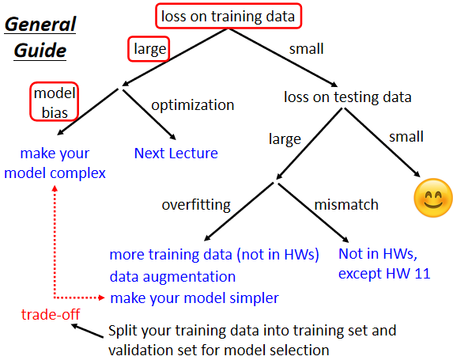
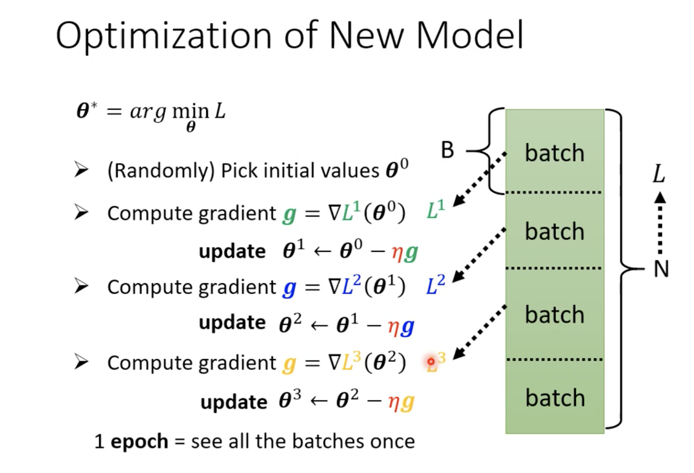

机器学习 by 李宏毅(1)
Introduction
机器具备拟合复杂数据的能力
- Regression：function outputs a scalar. 例如：假设预测未来某一个时间PM2.5的数值,找一个函数f,f 输出是明天中午的PM2.5的数值,输入可能是种种跟预测PM2.5 有关的指数，包括今天的PM2.5的数值,今天的平均温度,今天平均的臭氧浓度等等,输出明天中午的PM2.5的数值,那建立这个函数的任务,叫作Regression。
- Classification：given options(classes), the function outputs the correct one.
- Structured Learning: create something with structure (image, document)
Case Study
YouTube观看次数预测
输入是youtube后台资讯,输出就是某一天这个频道会有的总观看的次数.
Function with Unknown Parameters (Model)
\[ y = b + w * x_{1} \] Example:
\[ x: feature \\ W\ C^TB\ b : unknown\ parameters \]
Define Loss from Training Data （function of parameters L(b,w)）
MAE : mean absolute error
MSE : mean square error
Cross-entropy
Loss 反映了当前参数的表现，Loss越大表示当前一组参数越差
Error Surface：为不同的w跟b的组合计算Loss,然后就可以画出以下等高线图.
越偏红色,代表计算出来的Loss越大,就代表这一组w跟b越差,如果越偏蓝色,就代表Loss越小,就代表这一组w跟b越好，模型的预测越精确
Optimization
最佳化的问题，最佳化模型的未知参数
优化方法：Gradient Descent - hyper parameter : learning rate, sigmoid, batch size
存在的问题：local minima、Gradient disappear
模型有两个参数,有w跟b,那有两个参数的情况下,Gradient Descent：
随机初始化参数，即为\(w^0\)和\(b^0\)
分别计算w跟loss的微分,b对loss的微分
更新w跟b,把w⁰减掉learning rate,乘上微分的结果得到w¹,把b⁰减掉learning rate,乘上微分的结果得到b¹
SGD（stochastic gradient descent）
SGDM (Stochastic Gradient Descent with Momentum)
Sigmoid Function
调整的 b 跟 w 跟 c, 就可以制造各种不同形状的 Sigmoid Function
- 如果改w就会改变斜率你就会改变斜坡的坡度
- 如果改b 就可以把 Sigmoid Function 左右移动
- 如果你改c 你就可以改变 Sigmoid Function 的高度
不同的 w 不同的 b 不同的 c,你就可以製造出不同的 Sigmoid Function,把不同的 Sigmoid Function 叠起来以后,就可以逼近各种不同的,Piecewise Linear 的 Function，从而逼近各种连续函数

θ 是一个长向量,表示成 θ1 θ2 θ3 等等等,我们现在就是要找一组 θ,这个 θ 可以让我们的 Loss 越小越好
- 我们一开始要随机选一个初始的数值,这边叫做\(θ_0\)
- 接下来计算微分, 用 θ1 θ2 θ3 来表示,每一个未知的参数,都去计算它对 L 的微分,把每一个参数都拿去计算对 L 的微分以后,集合起来它就是一个向量, 用 g 来表示它, 叫做 Gradient,
- 算出 g 以后, Update 参数,本来有一个参数叫 θ1,上标 0 代表它是一个起始的值,它是一个随机选的起始的值,把这个 减掉 η 乘上微分的值,得到 ,代表 θ1 更新过一次的结果, 减掉微分乘以,减掉 η 乘上微分的值,得到,以此类推
General Guidance

Model Bias
Model 过于简单，不能拟合数据，此时需要增加Model的复杂性
Optimization Issue
gradient descent 只能找到局部最小值，而非全局最小值。
Start from shallower networks (or other models), which are easier to train，If deeper networks do not obtain smaller loss on training data, then there is optimization issue.
Overfitting
model的自由度很大,它可以產生非常奇怪的曲线,导致训练集上的结果好,但是测试集上的loss很大
解决方向
- 增加训练集，如 data augmentation：图片左右翻转、缩放、裁剪等.
model constrain
- less parameters or sharing parameters
- less features
- Early stopping
- Dropout
Cross Validation: 把Training分成两半,一部分叫作Training Set,一部分是Validation Set
N-fold Cross Validation: 把训练集切成N等份,其中一份当作Validation Set,其当Training Set,然后这件事情你要重复N次
mismatch
训练集跟测试集的分布不一样，增加训练集的数量并不会使模型更好
When gradient is small
Optimization的时候,随著参数不断的update,training的loss不会再下降。常见的一个猜想,是这个地方参数对loss的微分为零,gradient descent就无法update参数,这个时候training停止, loss当然就不会再下降了。

gradient为零的点,统称为critical point，包括local minima and saddle point
- 区分local minima and saddle point
Tayler Series Approximation
在\(θ^{'}\)附近的loss function,可以被写出来
H里面放的是L的二次微分,它第i个row,第j个column的值,就是把θ的第i个component,对L作微分,再把θ的第j个component,对L作微分,再把θ的第i个component,对L作微分,做两次微分以后的结果
如果走到了一个critical point,意味着gradient为零,绿色的这一项为0，所以当在critical point的时候,这个loss function,它可以被近似为,L(θ)加上红色的一项

如果今天,positive definite的矩阵,它所有的eigen value特征值都是正的
- 对所有的v而言,都大于零,矩阵叫做positive definite 正定矩阵。算出hessian metric,它的eigen value特征值发现都是正的,它就是local minima。
- 如果对所有的v而言,小于零, hessian metric是negative definite,所有eigen value都是负的,就保证他是local maxima
- 那如果eigen value有正有负,那就代表是saddle point
H不只可以帮助我们判断saddle point,它还指出了参数可以update的方向
你在θ'的位置加上u,沿著u的方向做update得到θ,你就可以让loss变小，也就是eigen vector的方向
Batch and Momentum

把所有的 Data 分成一个一个的 Batch,或者叫Mini Batch。每一个 Batch 的大小为batch_size, 每次在 Update 参数的时候,分别对 batch 计算 Loss, 计算 Gradient, 然后Update 参数。所有的batch计算一遍称为一个epoch。（batch 进行 Shuffle）
Small Batch v.s. Large Batch
Larger batch size does not require longer time to compute gradient，GPU具有平行计算能力
Smaller batch requires longer time for one epoch，,当 Batch Size 小的时候,跑完一个 Epoch,花的时间是比大的 Batch Size 还要多
Noisy 的 Gradient,反而可以帮助 Training，拿不同的 Batch 来训练你的模型，左边在 MNIST 上,右边在 CIFAR-10 上
- 横轴代表的是 Batch Size
- 纵轴代表的是正确率
“Noisy” update is better for training
Small Batch 因为每次选 Batch ,计算 Loss,所以相当于每一次 Update 你的参数的时候,用的 Loss Function 都是越有差异
Full Batch, 在 Update 参数的时候,就是沿著一个 Loss Function 来 Update 参数, 走到一个 Local Minima,走到一个 Saddle Point时, Gradient = 0,如果不去看Hession Matrix ，用 Gradient Descent 的方法, 无法再 Update Parameters
“Noisy” update is better for generalization
Small Batch, Testing 的时候效果比较好,以下实验结果是引用自,On Large-Batch Training For Deep Learning,Generalization Gap And Sharp Minima
Momentum
解决 Saddle Point,或 Local Minima 的技术
Small Gradient
在物理的世界裡,一个球如果从高处滚下来,就算滚到 Saddle Point,如果有惯性,它还是会继续往右走,直到它走到一个 Local Minima。
Vanilla Gradient Descent：一般的 Gradient Descent

Gradient Descent + Momentum
加上 Momentum 以后,每一次在 Update 参数的时候,我们不是只往 Gradient Descent,我们不是只往 Gradient 的反方向来移动参数, 而是 Gradient 的反方向,加上前一步移动的方向, 两者加起来的结果, 更新参数,
Momentum 也是 Update 的方向,不是只考虑现在的 Gradient,而是考虑过去所有 Gradient 的总和.

总结
- Critical points have zero gradients.
- Critical points can be either saddle points or local minima.
- Can be determined by the Hessian matrix.
- Local minima may be rare.
- It is possible to escape saddle points along the direction of eigenvectors of the Hessian matrix
- Smaller batch size and momentum help escape critical points.